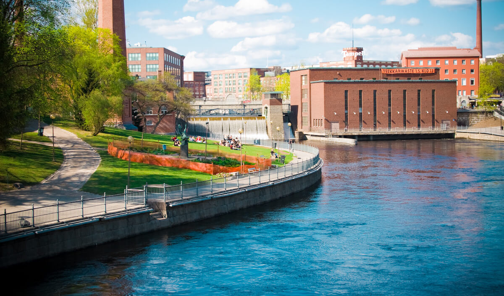
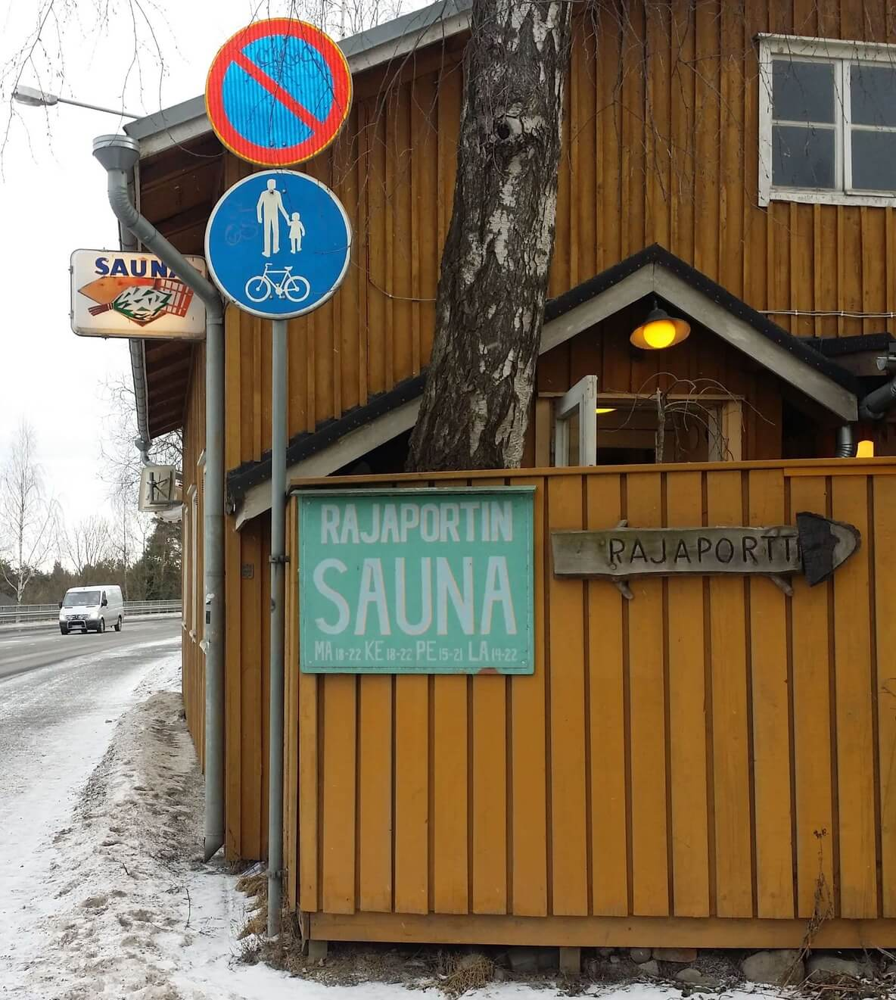
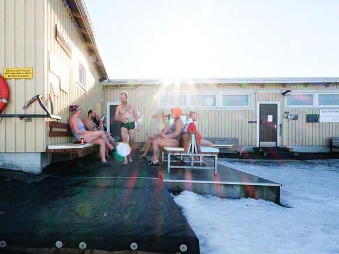

Tervetuloa maailman saunapääkaupunkiin Tampereelle


Miten Tampereesta tuli maailman saunapääkaupunki?
Tampere on tunnettu vuodesta 2018 maailman saunapääkaupunkina.
Kuvassa Rajaportin sauna Pispalassa, joka aloitti toimintansa vuonna 1906 ja on Suomen vanhin
edelleen toiminnassa oleva yleinen
sauna. Sauna on edelleen lähes alkuperäisessä asussaan ja tarjoaa maan parhaat ja pehmeimmät löylyt
läpi vuoden.
Nykyisin sauna on Tampereen kaupungin omistuksessa ja toiminnasta vastaa Pispalan saunayhdistys ry.
Saunapääkaupunki-titteli on ansaittu
Tampereelle
kaupungin korkeatasoisilla saunoilla sekä sillä, että niitä on eniten Suomessa. Maailman saunapääkaupungiksi
Tamperetta
ovat puoltaneet Kansainvälinen saunaliitto, International Sauna Association ja Suomen Saunaseura ry.
Tampereen saunakulttuurin nostaminen ja saunapääkaupunki-tittelin käyttäminen lähti liikkeelle tamperelaisten
saunayhteisöjen toimesta, kun Tampereen seudulle alettiin rakentaa 20:ttä yleistä saunaa. Saunahistoria
kaupungissa on
mittava, sillä Tampereen ja samalla Suomen vanhin yhä toimiva yleinen sauna, Rajaportti, aloitti toimintansa
vuonna
1906.
Suomen Saunaseura ry on todennut puoltolauselmassaan, että Tampereen saunapääkaupunkistatus edistää
suomalaisen saunan
asemaa sekä kansallisesti että kansainvälisesti. Kansainvälinen saunabuumi on parhaillaan käynnissä ja
saunomisesta on
tullut erityisen trendikästä varsinkin Japanissa. Tampereelta Japaniin on järjestetty esimerkiksi
virtuaalisia
saunaelämyksiä.
Visit Tampere on koonnut Tampereen seudun yleiset saunat omaksi sivukseen osoitteeseen visittampere.fi/nae-ja-koe/saunapaakaupunki.
Sivuilla
annetaan matkailijoille myös yleisiä ohjeita, miten saunassa tulee toimia. Seudun yleisten saunojen
ovenpieliin on myös
ripustettu Saunapääkaupunki-kyltit.
Tutustu Tampereen saunatarjontaan

Rauhaniemen kansankylpylä
Rauhaniemen kansankylpylä tarjoaa kävijöilleen Tampereen tunnelmallisimmat löylyt sekä mahtavat
Näsijärven selälle
aukeavat maisemat. Rauhaniemessä on kaksi perinteistä suomalaista saunaa. Saunat ovat lämpiminä
vuoden jokaisena
päivänä, ja uimaan pääsee myös talvisin avantoon.
Suolijärven talviuintisaunalla on käytössä laudepaikan varaus ruuhkahuippujen ja pihalla jonottamisen
ehkäisemiseksi,
tavoitteena aina miellyttävä saunomiskokemus. Varauskalenterissa lisätietoa.
Kirkasvetisen järven rannalla, soutustadionin kupeessa on tarjolla miellyttävä uimapaikka ympäri
vuoden. Tilavat
saunaosastot, kirkasvetinen Kaukajärvi ja mukava saunaporukka takaavat nautinnon! Kesällä hyvin
varusteltu kioski ja
talviaikaan on saatavana virvokkeita.